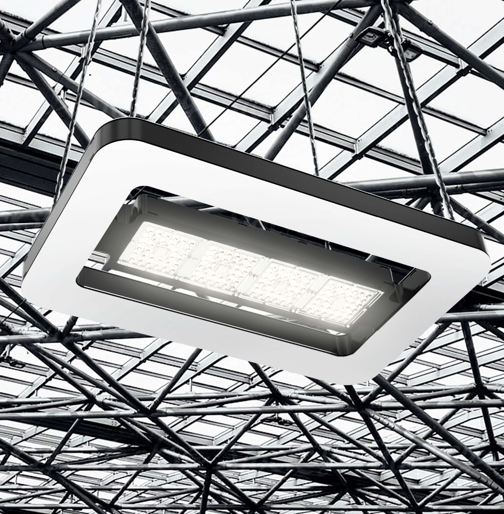
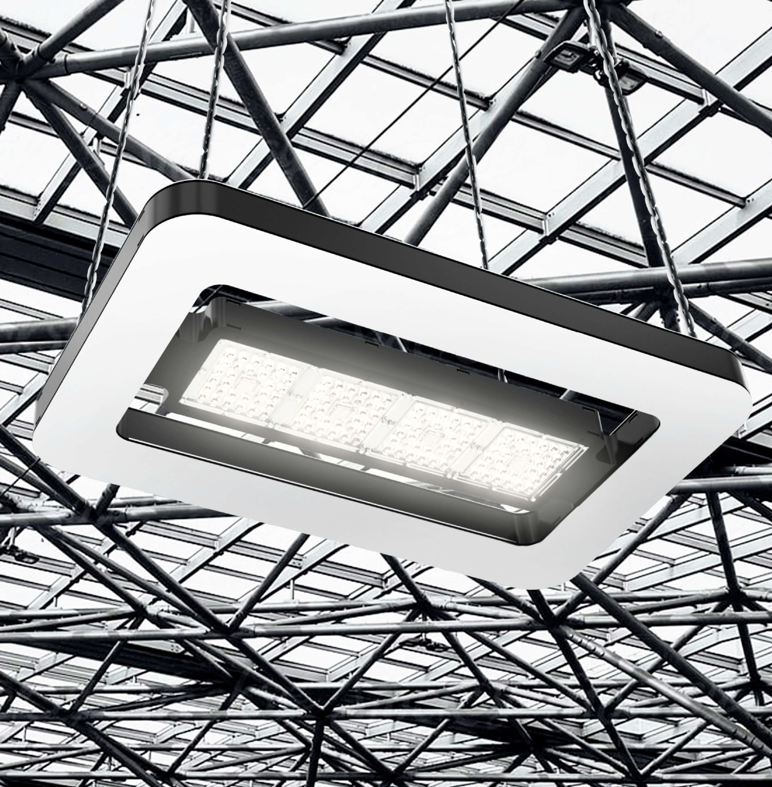

Светильники будущего
Мы создали LED-светильник, который гораздо эффективнее обычного фонарного освещения. Таких нет больше ни у кого в стране.

Технология
Благодаря гибкому подходу к производству светильник легко подстраивается под разные нормы освещения, и поэтому попадает сразу в несколько ниш на рынке мощных светильников.

Срок службы светодиодов светильника увеличен за счёт новой системы теплоотвода.
Эта же система позволяет легко конфигурировать светотехнические параметры, форм-фактор и внешний вид светильника под различные типы архитектуры.
Светильники различной мощности легко внедрить на любые объекты. Это возможно благодаря гибким технологическим процессам и адаптивной конструкции без литьевых корпусных деталей и радиаторных профилей.

Конструкция светильника будущего остаётся компактной, мощность — сопостовимой с аналогами, а форм-фактор помещается в корпус-рамку.
Наши светильники прослужат на 30 % дольше, чем обычные.
Конструкция
Отсутствие классического радиатора и корпусных деталей позволяют обойтись без тяжёлой оснастки. Поэтому корпус легко увеличивается под необходимые LED-модули.

Дизайн
Светильники легко персонализируются с помощью накладных панелей.
Модели
Линейка светильников варьируется по мощности, размеру и типу крепежа.

1 LED-модуль
40–80 Вт

2 LED-модуля
80–300 Вт

3–5 LED-модулей
160–1000 Вт
4–8 LED-модулей
160–1000 Вт
1 LED-модуль
40–150 Вт
2 LED-модуля
80–300 Вт
3–5 LED-модулей
160–1000 Вт
4–8 LED-модулей
160–1000 Вт
В светильники встроен диммер, что позволяет управлять интенсивностью освещения в зависимости от времени суток и других условий.
Светильники подходят для освещения парковок, придомовой территории, дорог внутри жилых массивов и прогулочных зон.
Отдельная категория высоковатных светильников — освещение для промышленных помещений.
 
Уличный светильник прошёл отбор в лонг-лист акселератора BuildUP Skolkovo
Опоры
Для полного комплекта мы также продаём конусовидные и цилиндрические опоры. Они сделаны из анодированного алюминия, а внутрь встроены системы диммирования. Высота опор регулируется под любую местность: от 3000 мм для узких улочек до 6000 мм для больших проспектов.


Столбы доступны в 12 цветах с матовым или брашированным покрытием. Декоративные и антикоррозийные свойства алюминиевых опор соответствуют стандарту анодирования Qualanod Architecture.
Технические характеристики светодиодного модуля
Светодиодный модуль идеально подходит для уличного и промышленного освещения. Линейка состоит из 28 последовательно соединённых светодиодов. Светодиоды лучшие в своём классе.

Прототип светильников прошёл предварительные испытания. К весне 2023 мы хотим запустить первую опытную эксплуатацию 10–15 светильников мощностью 115 и 70 Вт. Если вам интересно стать первым покупателем светильников будущего, напишите нам на почту mail@ekaterinburg.design и мы обсудим детали.
Если ждёте первую массовую серию, оставляйте заявку на предзаказ.
Подписывайтесь, чтобы не пропустить новые проекты